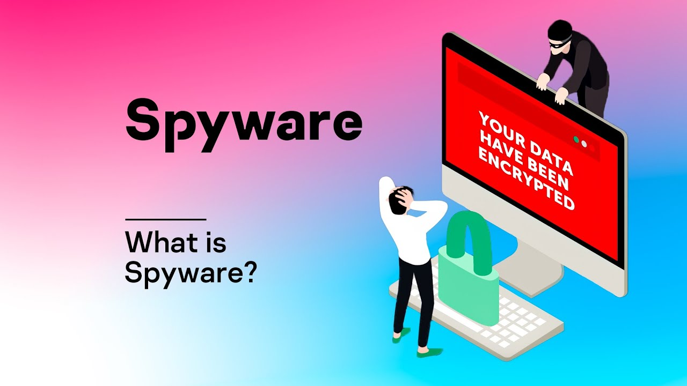

What is 'SPYWARE'?
Spyware collects information about users’ activities without their knowledge or consent. This can include passwords, pins, payment information and unstructured messages.
The use of spyware is not limited to the desktop browser: it can also operate in a critical app or on a mobile phone.
Even if the data stolen is not critical, the effects of spyware often ripple throughout the organization as performance is degraded and productivity eroded.
Fileless Malware Example:
Astaroth is a fileless malware campaign that spammed users with links to a .LNK shortcut file. When users downloaded the file, a WMIC tool was launched, along with a number of other legitimate Windows tools. These tools downloaded additional code that was executed only in memory, leaving no evidence that could be detected by vulnerability scanners. Then the attacker downloaded and ran a Trojan that stole credentials and uploaded them to a remote server.